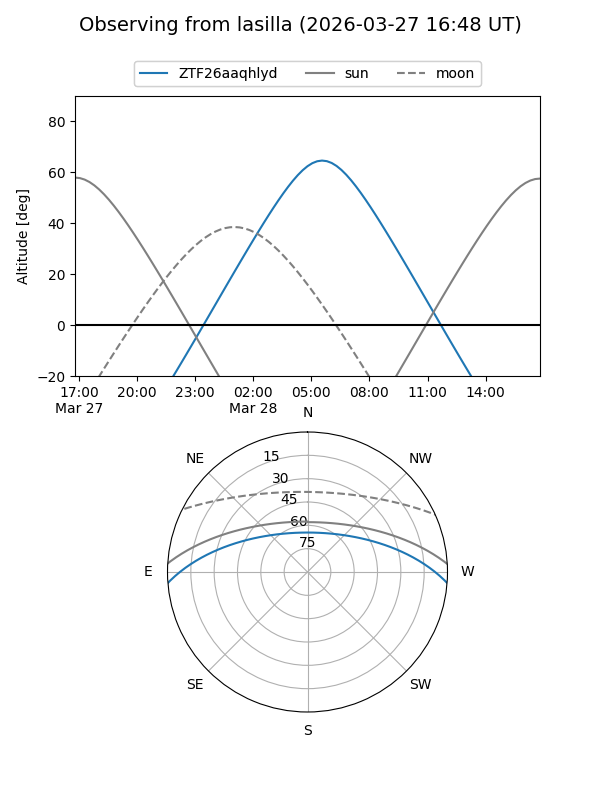
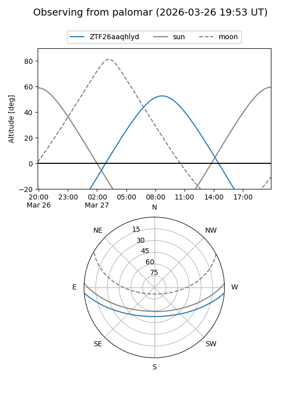

ZTF26aaqhlyd
Target ZTF26aaqhlyd at 2026-03-27 10:23
Aliases and brokers:
FINK: link
Lasair: link
ALeRCE: link
alt names
ZTF26aaqhlyd (ztf,fink_ztf)
Coordinates:
equatorial (ra, dec) = 197.9745,-3.74552
equatorial (HMS+DMS) = 13:11:53.89,-03:44:43.87
galactic (l, b) = (312.8018,+58.73359)
Flags:
Photometry:
last ztfg=17.30
1 ztfg detections
Lightcurve
Visibility


Additional plots